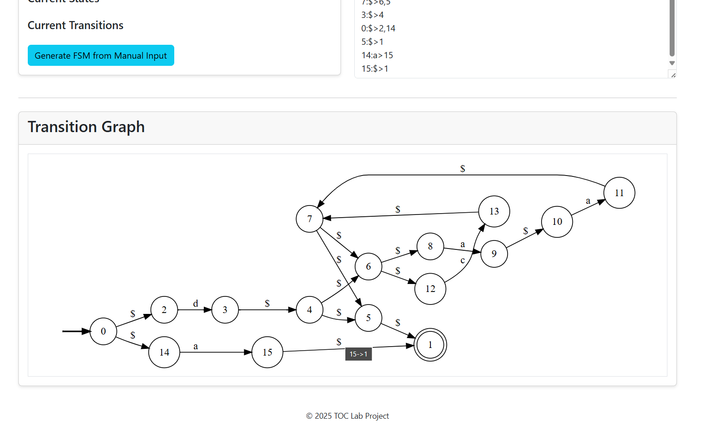

Our Features
Finite Automata Simulator
Simulate DFAs and NFAs interactively with step-by-step visualizations and detailed state transitions.

Automata Creator
Build your own automata with our custom creator. Define states, transitions, and experiment with your own designs.
DFA Minimizer
Optimize your DFAs by minimizing the number of states, making your automata more efficient and easier to understand.
NFA to DFA Converter
Convert non-deterministic finite automata (NFAs) to deterministic ones (DFAs) seamlessly with our robust algorithms.

FSM to Regular Expression
Transform finite state machines into regular expressions and vice versa to analyze patterns and simplify designs.